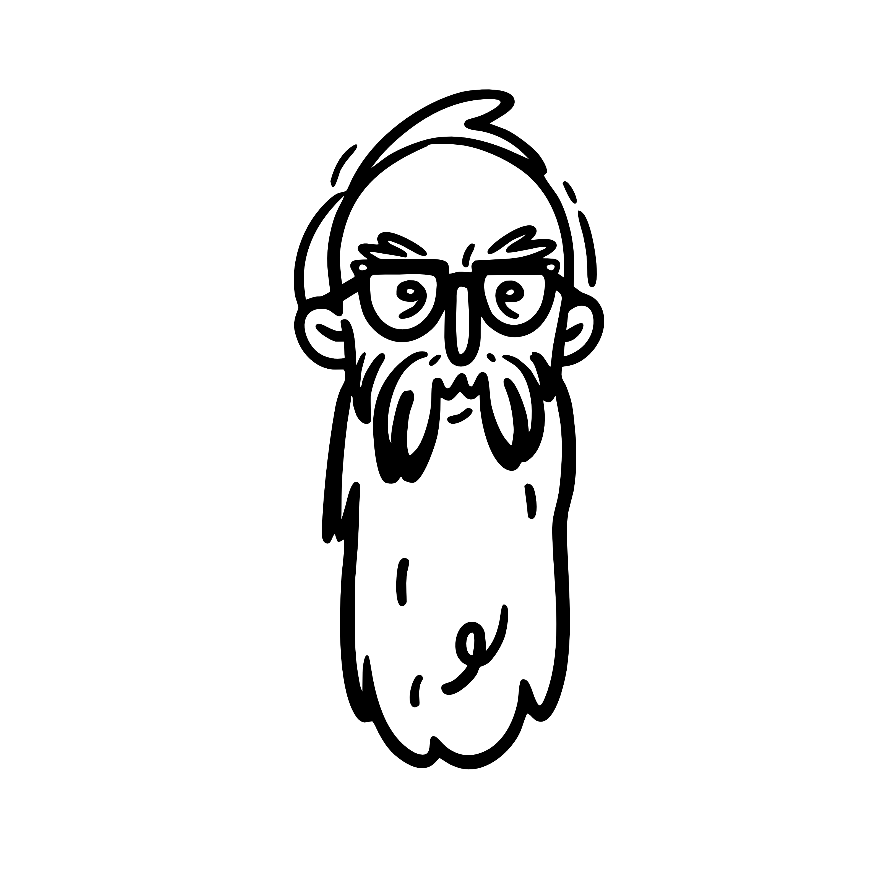

How it should feel and never feel · your moodboard · where to look
Is it enough? One family of six, every part covered
Checked on contact sheets: only non-screens and broken rows go
Like · no · why, read back to you, one sharper round
Measured: the picture, what it shows, its page. Tagged: photo, render, lettering, layout, type
Numbers first, then the eye. Bins broken up, strays placed
The agent says which fit. You take any · note a split or a merge · take a pair as a seed
One Lead · Likes · Noes · move a tile. Read back to you
Arrangements · navigation · type · grounds · accents · what the family shares
Stand-in fonts and gradients flagged. Drop or swap anything?
Colours or faces you own or refuse · light, dark or both · your pictures
From your family's library, with your real content. No reference supplies a whole screen
Any number of them. The agent never ranks or says which it prefers
One thing at a time: navigation, type, ground, accent
"7 with the ground from 3" · "more typefaces for 4"
Real faces, every width, states, motion